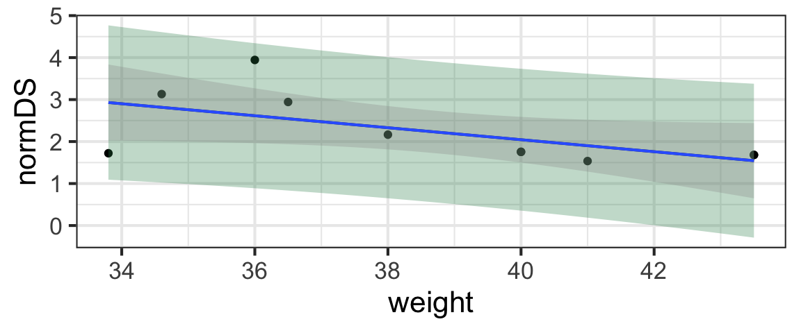

Learning Outcomes
In this module, we will build (just a little) on our tools to do inference on the simple linear regression model, devising methods to make predictions from a model with uncertainty (in other words, predictions with confidence intervals).
By the end of the module you will:
- Be able to compute confidence intervals and prediction intervals for fitted values from a linear regression
- Be competent to explain the difference between confidence and prediction intervals
These materials come from your text book, FAStR2 Chapter 6.4.
Confidence and Prediction Intervals
In the last module, we learned to generate confidence intervals (or do hypothesis tests) for the slope and intercept parameters of a simple linear regression.
But often, we are interested in using fitted regression models to predict response variable values in specific scenarios. In other words, we’re sometimes more interested in the predicted response variable values \(\hat{y}\) than the parameter estimates \(\beta_0\) and \(\beta_1\).
It’s a simple matter to compute point estimates of these fitted values: if we have an x-value of interest (let’s call it \(x_*\)), we just compute \(\hat{\beta}_0 + \hat{\beta}_1x_*\) to get our estimate.
But what about uncertainty?
Ways to Conceptualize Uncertainty in Predictions
Text book reference: FAStR Chapter 6.4.7
We could do this two ways!
- A confidence interval: We could find an interval that gives plausible values for “where the line is located”, taking into account uncertainty in the intercept and slope estimates. Another way of thinking about this is that it gives a plausible range of values for the expected value (mean) of the response variable for all hypothetical new observations with \(X = x_*\).
- A prediction interval: We could find an interval that gives plausible values for “the point cloud” of possible new observations, taking into account uncertainty in the slope and intercept, plus the residual variance. Another way of thinking about this is that it gives a plausible range of values for the response for one new datapoint with \(X = x_*\). Note that we’ve coined the new name prediction interval to differentiate it from the other one, this is really also a CI (just for a very specific scenario).
Practical Example and Calculations
In order to compute these confidence and prediction intervals, we’ll definitely need appropriate standard error estimates for the predicted values \(\hat{y}\). But before deriving them, let’s first review a practical example just to keep the big picture front and center.
Note: this video is from a great contemporary statistician and teacher, Mine Çetinkaya-Rundel - she’s awesome…
(You can also watch directly on YouTube if you prefer.
SE for a Confidence Interval
Text book reference: FAStR Chapter 6.4.7
If our goal is a confidence interval about \(\hat{y}\), then we need to examine the sampling distribution of
\[ \hat{Y}_* = \hat{\beta}_0 + \hat{\beta}_1x_*\] or (again using \(B_1\) and \(B_2\) to reinforce the thought that the parameter estimates can be thought of as random variables)
\[ \hat{Y}_* = B_0 + B_1x_*\]
Since \((\bar{x}, \bar{Y})\) is on the line, \(\bar{Y} = B_0 + B_1\bar{x}\) and we can substitute \(\bar{Y} - B_1\bar{x}\) for \(B_0\):
\[ \hat{Y}_* = \bar{Y} - B_1\bar{x} + B_1x_*\]
\[= \bar{Y} + B_1(x_* - \bar{x})\]
We already know that
\[\bar{Y} \sim \text{Norm}(\beta_0 + \beta_1\bar{x}, \frac{\sigma}{\mid \mathbf{1}\mid})\]
and from our expression for the SE of \(B_1\) (since \(x_*\) and \(\bar{x}\) are constants here),
\[ B_1(x_* - \bar{x}) \sim \text{Norm}(\beta_1x_* - \beta_1\bar{x}, \frac{\sigma(x_* - \bar{x})}{\mid \mathbf{x} - \mathbf{\bar{x}}\mid})\]
And we know that \(\bar{Y}\) and \(B_1\) are independent, so the variance of their sum is just the sum of their variances, and:
\[\hat{Y_*} \sim \text{Norm}\bigg{(}\beta_0 + \beta_1x_*, \sigma \sqrt{\frac{1}{\mid \mathbf{1} \mid ^2} + \frac{(x_* - \bar{x})^2}{\vert \mathbf{x} - \mathbf{\bar{x}}\vert^2}}\bigg{)}\]
Practically (substituting our sample statistics as parameter estimates and skipping the vector notation), we will estimate the standard error of this sampling distribution by \(s \sqrt{\frac{1}{n} + \frac{(x_* - \bar{x})^2}{(n-1)s_x^2}}\) (like you saw in the video).
SE for a Prediction Interval
The result we just got will help us to find the SE for a prediction interval, since it already takes into account two of the three sources of uncertainty we need to account for (the slope and intercept and residuals).
We’ll start by considering the random variable \(Y_* \sim \text{Norm}(\beta_0 + \beta_1x_*, \sigma)\) which models a “new” (that is, indepdendent of the data used to fit the model) observation of the response for \(x = x_*\).
What is the sampling distribution of \(Y_* - \hat{Y}_*\)? Its standard error will help us compute the margin of error for our prediction interval. Luckily, again we can use the fact that the variance of a sum (or difference) is the sum of the variances, finding that
\[Y_* - \hat{Y}_* \sim \text{Norm}\bigg{(}0, \sigma \sqrt{1 + \frac{1}{\mid \mathbf{1} \mid ^2} + \frac{(x_* - \bar{x})^2}{\vert \mathbf{x} - \mathbf{\bar{x}}\vert^2}}\bigg{)}\]
So we can estimate the SE for a prediction interval via \(s \sqrt{1 + \frac{1}{n} + \frac{(x_* - \bar{x})^2}{(n-1)s_x^2}}\) (again, like you saw in the video).
R Shortcuts
Of course, it’s tedious to compute these estimates by hand (and you already saw a brief example of how to do it in R in the video).
To recap, you can compute confidence or prediction intervals in R
using predict(). Assuming you have a fitted model
m with response y and predictor
x_star in dataset d, and you want an interval
estimate of the fitted value for \(x =
x_*\):
m <- lm(y ~ x, data = d)
new_data <- data.frame(x = x_star)
conf_int <- predict(m, newdata = new_data,
interval = 'confidence',
level = 0.95)
pred_int <- predict(m, newdata = new_data,
interval = 'prediction',
level = 0.95)If you wanted to make interval estimates for more than one value
\(x_*\), you can just enter a list of
values in new_data:
new_data <- data_frame(x = c(x_star1, x_star2, ...))Finally, if you want to plot one or both intervals on a scatter plot of the data, you can!
So you can actually see the result, let’s demonstrate with a
regression predicting bonobo dominance score normDS by
weight from the bonobos dataset.
gf_point(normDS ~ weight, data =bonobos) %>%
gf_lm(interval = 'prediction', color = 'black',
fill = 'seagreen') %>%
gf_lm(interval = 'confidence') ## Warning: Using the `size` aesthietic with geom_ribbon was deprecated in ggplot2 3.4.0.
## ℹ Please use the `linewidth` aesthetic instead.## Warning: Using the `size` aesthietic with geom_line was deprecated in ggplot2 3.4.0.
## ℹ Please use the `linewidth` aesthetic instead.
Practice
Find an interval estimate for the assertiveness score
(AssR) of Zeke, and 8-year-old male bonobo, based on the
dataset bonobos (which also contains the variable
Age).
m <- lm()
new_data <- data.frame()
predict()m <- lm(AssR ~ Age, data = bonobos)
new_data <- data.frame()
predict()m <- lm(AssR ~ Age, data = bonobos)
new_data <- data.frame(Age = 8)
predict()m <- lm(AssR ~ Age, data = bonobos)
new_data <- data.frame(Age = 8)
predict(m, newdata = new_data, interval = ...)m <- lm(AssR ~ Age, data = bonobos)
new_data <- data.frame(Age = 8)
predict(m, newdata = new_data, interval = 'prediction')More Practice
The dataset earn contains data on people’s income
(earn) and their height in inches (height)
from a 1994 survey of Americans. Fit a model predicting income as a
function of height and then produce an interval estimate for the income
of people who are 6’4” (76 inches) tall.
m <- lm()
new_data <- data.frame()
predict()m <- lm(earn ~ height, data = earn)
new_data <- data.frame()
predict()m <- lm(earn ~ height, data = earn)
new_data <- data.frame(height = 76)
predict()m <- lm(earn ~ height, data = earn)
new_data <- data.frame(height = 76)
predict(m, newdata = new_data, interval = ...)m <- lm(earn ~ height, data = earn)
new_data <- data.frame(height = 76)
predict(m, newdata = new_data, interval = 'confidence')